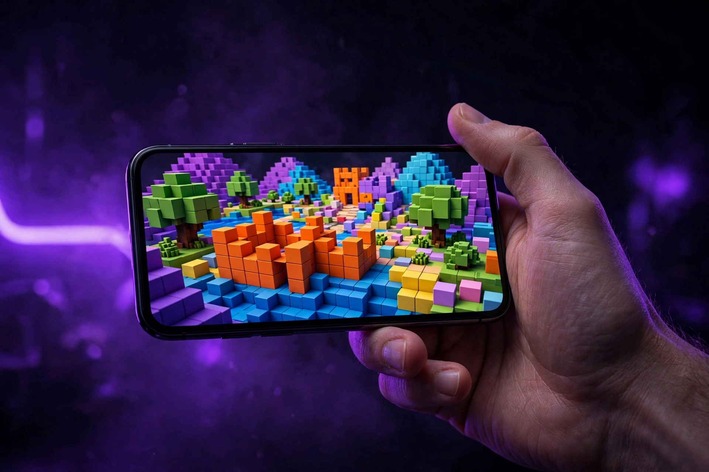

Guia rápido — o essencial em 30 segundos
- VNG é uma versão alternativa do Delta Executor, com guia próprio.
- Antes de baixar: entenda o que muda nessa versão e confira os requisitos.
- Scripts: funcionam da mesma forma — copiar, colar e executar.
O que é a versão VNG
A versão VNG do Delta Executor é uma variante do aplicativo, feita para um cenário de uso diferente da versão comum. O guia da versão VNG explica o que muda nessa versão e o que você precisa saber antes de baixar, para você escolher com calma se ela é a certa para o seu caso. A proposta continua a mesma: baixar, instalar, colar o script e executar, sem complicação. A interface é simples e os guias estão em português, o que ajuda tanto quem está começando agora quanto quem já tem experiência com scripts e quer apenas uma ferramenta estável para o dia a dia.
O que muda na versão VNG

O que muda na versão VNG é o contexto de uso e alguns detalhes da instalação, enquanto a execução de scripts continua funcionando da mesma forma. Por isso, antes de baixar, leia o guia com atenção e confira os requisitos do seu aparelho. Não trate a VNG como uma simples atualização da versão comum: são versões diferentes, com guias diferentes. Escolher a versão errada para o seu caso é uma das causas mais comuns de erro na primeira instalação. Se você já usa a versão comum sem problemas, não há motivo para trocar só por trocar — mude apenas se o seu caso pedir a versão VNG.
Como instalar a versão VNG
Para instalar a versão VNG, o primeiro passo é conferir os requisitos do seu aparelho e seguir o guia de instalação correspondente a essa versão. No Android, a instalação é direta pelo arquivo do aplicativo. Depois de instalar, abra o aplicativo, confira se ele abre normalmente e só então execute o seu primeiro script. Comece com scripts simples, de fontes conhecidas, e só depois avance para scripts mais complexos. Siga as etapas na ordem: pular passos é a causa mais comum de erros na primeira instalação. Se algo falhar no meio do caminho, volte uma etapa e refaça com calma.
Como executar scripts na VNG

Executar um script na versão VNG é simples. Primeiro, copie o código do script que você quer usar. Depois, abra o executor, cole o código na área indicada e toque em executar. O script passa a rodar dentro do jogo. Se nada acontecer, confira se o código está completo e se a versão do aplicativo está atualizada. Scripts desatualizados são uma das causas mais comuns de falha. Prefira scripts de fontes conhecidas e evite copiar códigos de qualquer lugar sem verificar a origem, porque um código mal feito pode travar o jogo ou não funcionar como esperado. Guarde os seus scripts favoritos para executar novamente sem precisar copiar tudo outra vez.
Perguntas frequentes
Devo trocar a versão comum pela VNG?
Troque apenas se o seu caso pedir a versão VNG. Se a versão comum funciona bem, não há motivo para trocar.
Os scripts são os mesmos?
Sim. A execução de scripts funciona da mesma forma: copiar, colar e executar.
Posso usar qualquer script?
Prefira scripts de fontes conhecidas e atualizados, e comece pelos mais simples.
E se der erro?
Confira se o código está completo, se o aplicativo está atualizado e revise as etapas do guia da versão VNG.